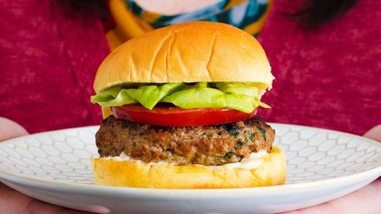

Turkey Burgers

Description
We love our turkey burger for one simple reason: We let it be. We didn't try to cover up the fact that it was turkey. Instead, we embraced it. We brought out its flavors and made it the best dang turkey burger there is. Turkey burgers tend to be drier so we added an egg to ours to help it hold together and give it added moisture. We also use 94 percent lean ground turkey and don't recommend any higher than that or the burgers might not hold together.
1 lb. Ground Turkey
1 Large Egg
2 Cloves Garlic
1 tbsp. Worcestershire Sauce
2 tbsp. Fresh Chopped Parsley
Kosher Salt
Freshly Ground Black Pepper
1 tbsp. Extra Virgin Olive Oil
Hamburger Buns
Lettuce
Slice Tomatoes
Mayonnaise
Steps
a large bowl, mix together turkey, egg, garlic, Worcestershire sauce, and parsley, then season with salt and pepper. Form mixture into four flat patties.
In a medium skillet over medium heat, heat oil. Add patties and cook until golden and cooked through, 5 minutes per side. Serve on a bun with desired toppings.
Back to Recipe Selection